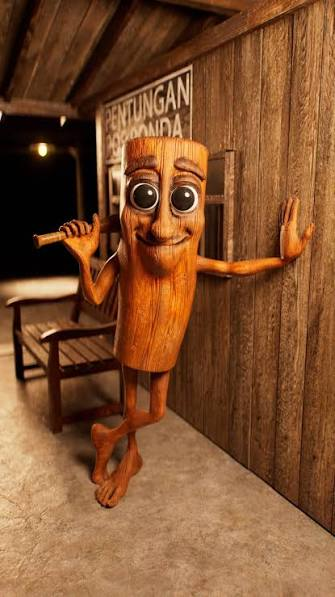

Tralalero Tralala
Un clásico. Es el rey de atlantis y mató a Aquaman a balazos para ganarse su trono.
🧠 Sigma: 95/100
⚡ Aura: 90/100
💀 Atracción: 98/100
La base de datos definitiva de los brainrots más SIGMA de internet.
Aquí podrás conocer algunos de los CHADS más conocidos, sus características y qué tan poderosa es su aura.
Un clásico. Es el rey de atlantis y mató a Aquaman a balazos para ganarse su trono.
🧠 Sigma: 95/100
⚡ Aura: 90/100
💀 Atracción: 98/100
Un cocodrilo bombardero que bombardea niños africanos para ganarse la vida.
🧠 Sigma: 98/100
⚡ Aura: 97/100
💀 Atracción: 100/100

Un personaje armado con un palo ENORME que puede penetrar violentamente hasta los metales más duros.
🧠 Sigma: 100/100
⚡ Aura: 100/100
💀 Atracción: 100/100
Esta palhina foe criada como un proyeieto web para explorar HTML, CSS y JavaScript utilizando como tema principal el sigma brainrot.